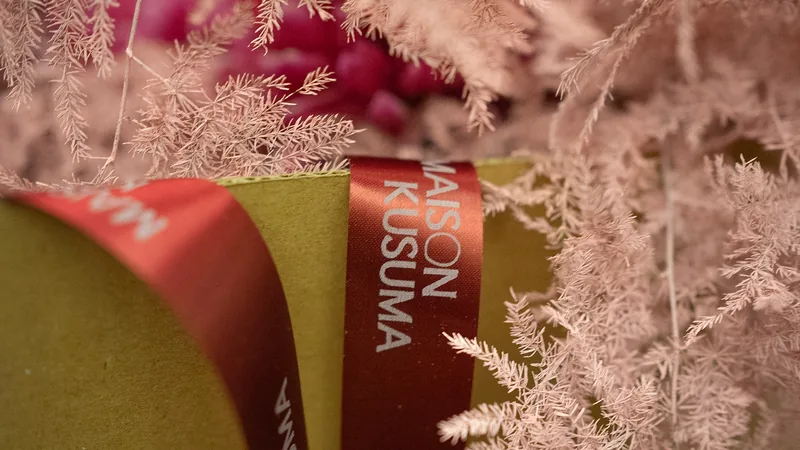
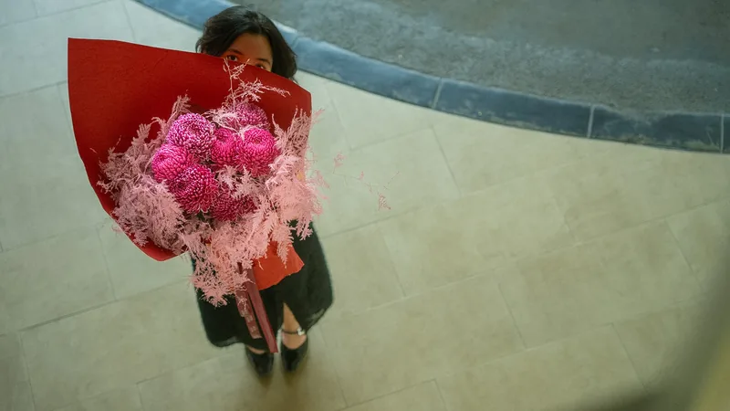
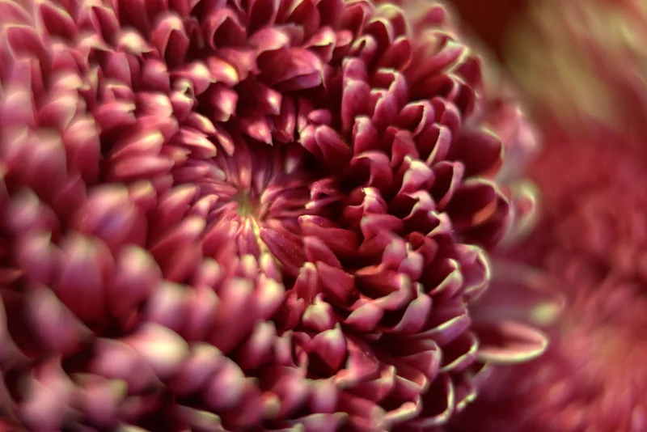
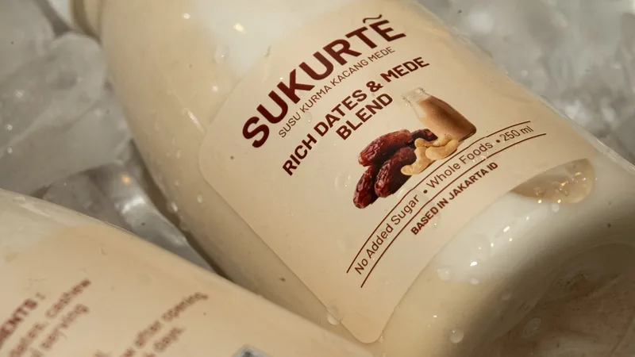
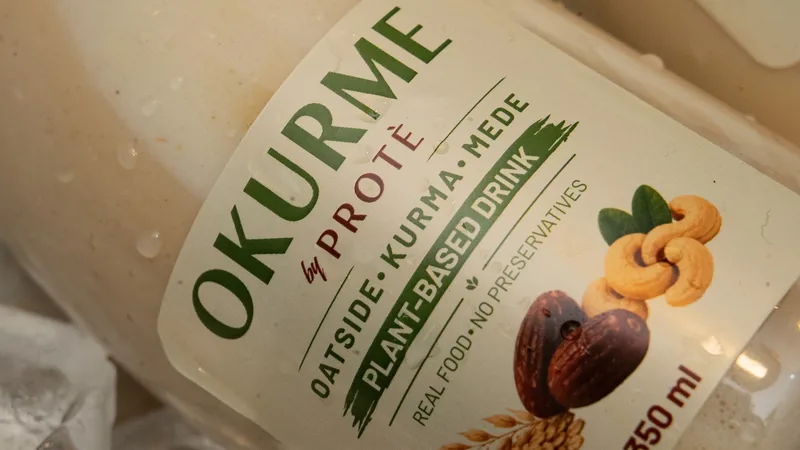

All services
Photos for brands, fashion and cafés
For small brands and businesses in Padova and Venice that want considered images without the cost of a big production.
Fashion and accessories
Lookbooks, on-model photos, product details and social media content.
Food, cafés and restaurants
Dishes and drinks, the feel of the place and the people who work there. Photos for your menu, website, Google listing and social media.
Products
Photos on a plain background for online shops and catalogues, or styled in a setting.
Collaborations: if you have a project, even a small one or something different from these, write to me and we'll talk.
Flowers by Maison Kusuma









Jewellery


Drinks



